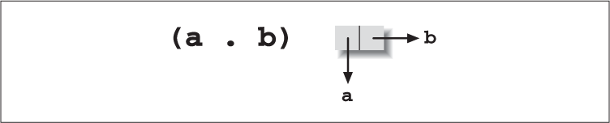
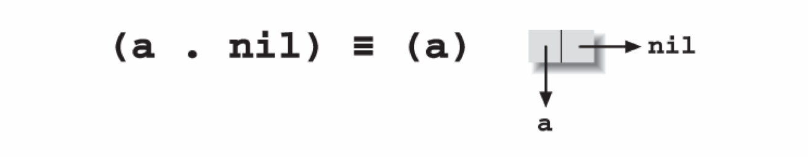
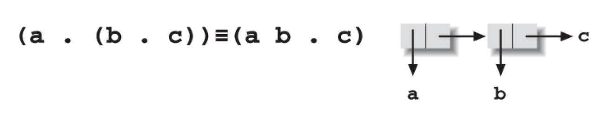
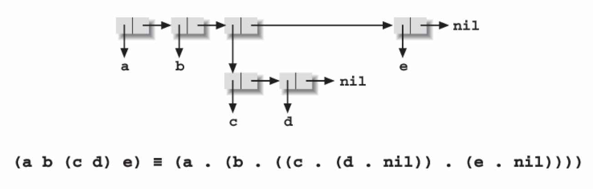
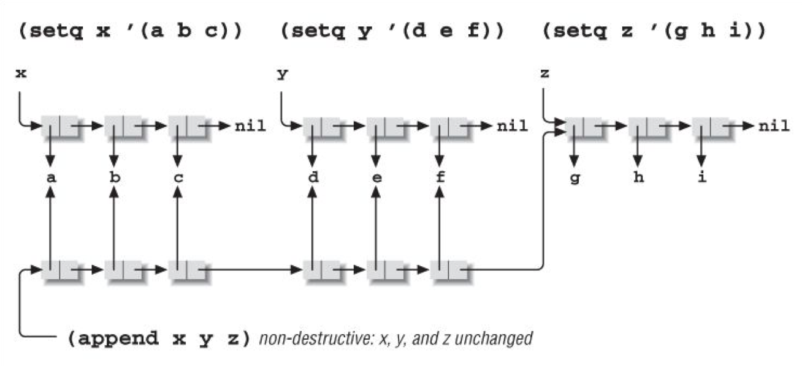
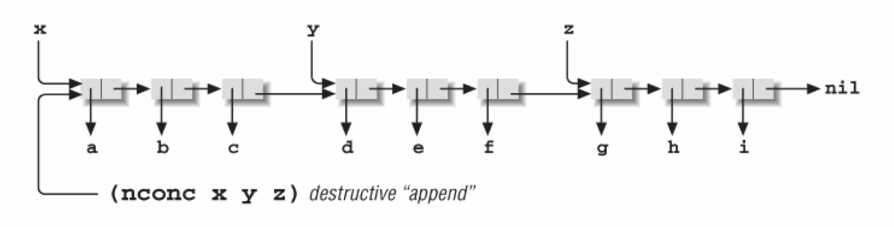

列表
Table of Contents
1 在本章：
列表初探
列表细节
递归列表函数
迭代列表函数
其他有用的列表函数
破坏性列表操作
循环列表？！
目前为止，我们已经看到了一些列表（list）的使用，但是我们并没有真的去探索它们如何工作以及为什么它们如此有用。既然列表作为Lisp的核心内容，本章我们就来全面的观察一下这个数据结构。
2 列表初探
就像我们已经看到的，Lisp中的列表就是一个括号包裹起来的0个或多个Lisp表达式的序列。列表可以嵌套；也就是说括号里的子表达式还可以包含一个或多个列表。下面是一些例子：
(a b c) ; 三个符号组成的列表 (7 "foo") ; 一个数字和字符串组成的列表 ((4.12 31178)) ; 列表只有一个元素：一个两个数字组成的自列表
空列表()等价于符号nil。
函数car和cdr[23]用来访问列表的一部分：car得到列表的第一个元素，cdr得到列表剩下的元素（除第一个元素之外）。
(car'(abc)) -> a (cdr'(abc)) -> (b c) (car (cdr '(a b c))) -> b
(回忆一下引用（quote）表达式–可能是一个完整的列表–表示按照字面来解释表达式。所以'(a b c)表示列表包含a、b、和c，而不是用b和c作为参数调用a)
只包含一个元素的列表的cdr为nil：
(cdr '(x)) -> nil
空列表的car和cdr都为nil：
(car '()) -> nil (cdr '()) -> nil
注意对于只包含nil的列表也是如此：
(car '(nil)) -> nil (cdr '(nil)) -> nil
但这并不表明()等价于(nil)。
对于这些你并不需要完全只听信我的言语。你只需要像第1章中执行Lisp表达式章节中所描述的那样，到*scratch* buffer里自己尝试执行这些语句。
列表通过函数list，cons以及append创建。函数list可以使用任意数量的参数构建列表：
(list 'a "b" 7) -> (a "b" 7) (list '(x y z) 3) -> ((x y z) 3)
函数cons使用一个Lisp表达式和一个列表作为参数。它通过将表达式添加到列表的前面构成新列表：
(cons 'a '(3 4 5)) -> (a 3 4 5) (cons "hello" '()) -> ("hello") (cons '(a b) '(c d)) -> ((a b) c d)
注意对列表使用cons构建新列表并不会影响之前的列表：
(setq x '(a b c)) ;将(a b c)赋值给变量x (setq y (cons 17 x)) ;cons 17给它并且赋值给y y -> (17 a b c) ;正常工作 x -> (a b c) ;并不会改变x
函数append使用任意数量的列表作为参数，并将其顶层元素连接成一个新列表。这会高效的去掉每个列表的外层括号，把剩下的元素放到一起，然后使用一对新的括号把它们括起来：
(append '(a b) '(c d)) -> (a b c d) (append '(a (b c) d) '(e (f))) -> (a (b c) d e (f))
函数reverse使用一个列表作为参数，将其顶层元素反转成为一个新的列表。
(reverse '(a b c)) -> (c b a) (reverse '(1 2 (3 4) 5 6)) -> (6 5 (3 4) 2 1)
注意reverse并不会反转子列表中的元素。
3 列表细节
这一章节将解释Lisp中列表的内部工作机制。既然大部分Lisp程序都会不同程度的使用列表，理解它们的工作机制是很有益处的。这会让你理解列表擅长做什么、不擅长什么。
列表由更小的称为cons cells的数据结构构成。cons cell由两个Lisp表达式构成，你可能并不惊讶如何访问它们–使用car和cdr。
函数cons使用它的两个参数创建一个新的cons cell。不像前一小节中所讲的，cons的两个参数可以是任意Lisp表达式。第二个参数不能是一个已存在的列表。
(cons 'a 'b) -> 一个由car a和cdr b组成的cons cell (car (cons 'a 'b)) -> a (cdr (cons 'a 'b)) -> b
生成的cons cell如图6-1所示。

图6-1 (cons 'a 'b)的结果
当你将一些其他元素与一个列表执行cons时，例如
(cons 'a '(b c))
结果是(a b c)，也就是一个car为a，cdr为(b c)的cons cell。后面会更详细的讲述它。
对于cdr不是列表的cons cell有一种特殊的语法。它被称为dotted pair notation，而cons cells有时也被称为dotted pairs：
(cons a b) -> (a . b) (cons '(1 2) 3) -> ((1 2) . 3)
当如图6-2所示的那样，一个cons cell的cdr为nil时，可以省略掉点号和nil。

图6-2 一个单元素list(a)
另一个省略的规则是当cons cell的cdr是另一个cons cell时，那么点号以及包裹cdr的括号都可以省略。见图6-3。

图6-3 一个cons cell指向另一个
当把这条规则和前一条忽略cdr为nil的规则组合起来的时候，我们就会发现下面的列表我们已经很熟悉了：
(a . (b . nil)) ≡ (a b . nil) ≡ (a b)
通常来说，Lisp的列表是一个由cons cells组成的链表，每个cell的cdr是另一个cell，最后一个cell的cdr为空。cons cells的car是什么并不重要。图6-4展示了一个列表作为另一个列表的一部分存在。

图6-4 一个列表包含一个子列表
当你编写
(setq x '(a b c))
这会将x指向这个由三个cons cell组成的链表的第一个cell。如果你编写
(setq y (cdr x)) ; 现在y是(b c)
这会将y指向上面列表中的第二个cons cell。一个列表事实上只是一个指向cons cell的指针。
最后一个cdr不为nil的列表有时被称作improper list。通常association list总是improper lists。
有多个函数用来检测一个Lisp对象是列表还是组成列表的一部分。
- consp检测它的参数是不是一个cons cell。对于(consp x)，当x为除空表之外的任何列表时返回true，其他返回false。
- atom检测它的参数是否为原子。(atom x)功能与(consp x)相反–任何不是cons cell的元素，包括nil、数字、字符串以及符号都是原子。
- listp检测它的参数是否为列表。对于(listp x)，如果x为cons cells或者nil则返回true，其他返回false。
- null检测它的参数是否为nil。
现在你已经知道了cons cells，你可能会觉得(car nil)和(cdr nil)都定义为nil很奇怪，因为nil甚至不是一个cnos cell，因此它也没有car和cdr。实际上，有一些Lisp方言在你对nil调用car和cdr时会报错。大多数Lisps的行为跟Emacs Lisp一样，主要是为了方便–但是这个特例会造成一些奇怪的副作用，就像上面提到的，()和(nil)在car和cdr的时候的结果是一样的。
4 递归列表函数
传统的Lisp教材使用一系列简短的编程练习来阐明列表和cons cells的行为。让我们花一点时间看一下两个广为人知的例子，然后再往下进行。
在这个练习中我们的目标是定义一个名为flatten的函数，将指定的列表的所有内部的子列表都释放出来平铺到一层上。例如：
(flatten '(a ((b) c) d)) -> (a b c d)
解决方案是使用递归，将car和cdr分别平铺，然后将他们合并到一层上来。假如输入的列表为
((a (b)) (c d))
它的car是(a (b))，平铺之后是(a b)。cdr是((c d))，平铺之后的结果是(c d)。函数append可以将(a b)和(c d)组合起来并且保持平铺，结果是(a b c d)。所以flatten的核心代码是：
(append (flatten (car lst)) (flatten (cdr lst)))
（我将lst作为flatten的参数名称。不能使用list，因为它是一个Lisp函数的名称）现在，flatten只能对列表工作，所以对于(flatten (car lst))，如果(car lst)不是一个列表的话将会报错。我们因此需要这么改进：
(if (listp (car lst)) (append (flatten (car lst)) (flatten (cdr lst))))
这个if没有“else”分支。如果(car lst)不是列表怎么办？例如，假设lst为
(a ((b) c))
car不是一个列表。这时，我们只要简单的平铺cdr，(((b) c))，得到(b c)；然后用cons将car组装上去。
(if (listp (car lst)) (append (flatten (car lst)) (flatten (cdr lst))) (cons (car lst) (flatten (cdr lst))))
最后，我们需要一个方法来终止这个递归。在处理列表越来越小的分片的递归函数里，你能用来作为结束分片的最小分片是nil，而nil几乎总是作为这种函数的“默认选择”。在本例中，平铺nil的结果就是nil，所以完整的函数定义为
(defun flatten (lst) (if (null lst) ; lst是nil吗？ nil ; 是的话，返回nil (if (listp (car lst)) (append (flatten (car lst)) (flatten (cdr lst))) (cons (car lst) (flatten (cdr lst))))))
试着在*scratch* buffer里用这个函数处理一些列表，并且试着通过一些例子来理清函数逻辑。记住Lisp函数的返回值是其最后执行的表达式的值。
5 迭代列表函数
递归并不总是列表相关编程问题的正确解决方案。有时朴实直接的迭代也是需要的。在本例中，我们将会展示Emacs Lisp每次处理列表中一个元素的语法风格，有时这也被称为列表的“cdr-ing down”（因为每次迭代，列表都会因取其cdr而缩短）。
假设我们需要一个用来计数列表中符号个数，并且跳过像数字、字符串和子列表等其他元素的函数。这个递归函数是错误的：
(defun count-syms (lst) (if (null lst) 0 (if (symbolp (car lst)) (+ 1 (count-syms (cdr lst))) (count-syms (cdr lst)))))
递归–特别是深度递归–引入了非常多的额外资源来记录嵌套函数的调用和返回值，而这些应该尽量避免。而且，这个问题用迭代的方式解决显然更合理，而代码通常应该反映出解决问题的合理方式，而不是自作聪明地将解决问题地方式复杂化。
(defun count-syms (lst) (let ((result 0)) (while lst (if (symbolp (car lst)) (setq result (+ 1 result))) (setq lst (cdr lst))) result))
6 其他有用的列表函数
下面是其他一些Emacs定义的列表相关函数。
length返回列表的长度。对于improper list它不会工作。
(length nil) -> 0 (length '(x y z)) -> 3 (length '((x y z))) -> 1 (length '(a b . c)) -> error
nthcdr对列表调用n次cdr。
(nthcdr 2 '(a b c)) -> (c)
nth返回列表的第n个元素（第一个元素序号为0）。这与nthcdr的car等价。
(nth 2 '(a b c))-> c (nth 1 '((a b) (c d) (e f))) -> (c d)
mapcar使用一个函数和一个列表作为参数。它对列表包含的每个元素都调用一次函数，即将列表里的元素作为参数传给那个函数。mapcar的返回值是一个包含对每个元素调用函数之后的列表。所以如果你有一个字符串列表而你想要让其中的字符串首字母大写的话，可以这么写：
(mapcar '(lambda (x) (capitalize x)) '("lisp" "is" "cool")) -> ("Lisp" "Is" "Cool")
equal检测它的两个参数是否相等。它与第3章中的章节保存和取出point中介绍的eq并不相同。不像eq判断它的参数是否为同一个对象，equal判断的是两个对象是否具有相同的结构和内容。
这个区别很重要。例如：
(setq x (list 1 2 3)) (setq y (list 1 2 3))
x和y是两个不同的对象。也就是说，第一次调用list创建了一个包含三个cons cells的链表，而第二次创建了另外一个包含三个cons cells的链表。所以(eq x y)值为nil，即使两个列表实际上包含着相同的结构和内容。也因此，(equal x y)为true。
在Lisp编程中，每当你希望判断两个对象是否相等时，你都需要注意调用eq还是equal更合适。另一点需要注意的是eq是一个瞬发操作，而equal可能需要递归比较两个参数的内部结构。
注意下面的eq值为true。
(setq x (list 1 2 3)) (setq y x) (eq x y)
assoc会帮助你以键值的方式使用列表。当列表的形式为
((key1 . value1) (key2 . value2) ... (keyn . valuen))
被称为association list，或者简写为assoc list[24]。函数assoc会找到列表中第一个的car为指定参数的子列表。所以：
(assoc 'green '((red . "ff0000") (green . "00ff00") (blue . "0000ff"))) -> (green . "00ff00")
如果没有匹配的子列表，assoc返回nil。
这个函数使用equal来检测每个键keyn是否匹配输入参数。另一个函数，assq，功能与assoc相同但是使用eq来做匹配。
有些程序员不喜欢使用dotted pairs，所以他们建立的字典看起来可能不是这样的：
((red . "ff000") (green . "00ff00") (blue . "00ff"))
而是这样的：
((red "ff0000") (green "00ff00") (blue "000ff"))
这没问题，因为对于assoc来说，列表中的每个元素仍然为dotted pair：
((red . ("ff0000")) (green . ("00ff00")) (blue . ("0000ff")))
唯一的区别是在前面的例子里，assoc list中的每一项都只需要储存在一个单独的cons cell里，而现在需要两个。而在前面的列表中获取与key匹配的值时只需要这么做：
(cdr (assoc 'green ...)) -> "00ff00"
而现在必须这么做：
(car (cdr (assoc 'green ...))) -> "00ff00"
7 破坏性列表操作
目前为止，我们所看到的所有列表操作都是非破坏性的。例如，当你把一个对象cons到一个已存在的列表上时，结果是产生了一个全新的cons cell，它的cdr指向了原来未做改动的列表。任何其他引用之前列表的对象或变量都未受影响。同样的，append会创建一个新列表以及新cons cells来保存参数中列表的元素。它不会将x最后的cdr指向y，或者将y最后的cdr指向z，因为这样的话最后的nil指针就改变了。而这样的话就影响了x和y原来的使用。实际上append对这些列表分别创建了一个未命名的拷贝，如图6-5所示。注意z不需要拷贝；append总是直接使用最后一个参数[25]。

图 6-5： append函数不会影响它的参数
下面是非破坏性的append在Lisp代码中的表示：
(setq x '(a b c)) (setq y '(d e f)) (setq z '(g h i)) (append x y z) -> (a b c d e f g h i)
因为append并不会修改它的参数，所以这些变量储存的仍然是之前的值：
x -> (a b c) y -> (d e f) z -> (g h i)
但是如果做出了破坏性的修改，那么每个变量都会指向append时制作出的长链表的一部分，如图6-6所示。执行破坏性append的函数称为nconc。
(nconc x y z) -> (a b c d e f g h i) x -> (a b c d e f g h i) y -> (d e f g h i) z -> (g h i)

图6-6 不像append， nconc会影响它的参数
通常破坏性的修改列表并不明智。很多其他的变量和数据结构可能正在使用你修改的列表，所以最好不要修改它以致造成不可预知的影响。
另一方面，有时你确实希望破坏性的修改一个列表。可能你希望利用nconc的高效并且你确实地知道没有其他代码会因为列表的改变而受到影响。
使用破坏性操作的最常见的一个场景是改变assoc list中的值。例如，假如你有一个对应保存着人员名称和它们email的assoc list：
(setq e-addrs '(("robin" . "rl@sherwood.uk") ("marian" . "mf@sherwood.uk") ...))
现在假设有人的email地址改变了。你需要这样来更新它：
(setq e-addrs (alist-replace e-addrs "john" "johnl@exile.fr"))
而alist-replace实际上是一个非常低效地递归操作，它的机制是重新拷贝整个列表：
(defun alist-replace (alist key new-value) (if (null alist) nil (if (and (listp (car alist)) (equal (car (car alist)) key)) (cons (cons key new-value) (cdr alist)) (cons (car alist) (alist-replce (cdr alist) key new-value)))))
不仅仅是低效（特别是当输入很大时），而且有可能你确实希望改变任何引用这个数据结构的对象和变量。显然，alist-replace并没有改变原数据结构。它创建了一个全新的拷贝，而任何引用老数据的对象都没有得到更新。以代码来表示这种情况就是：
(setq alist '((a . b) (c . d))) ; alist 是一个 assoc list. (setq alist-2 alist) ; alist-2 指向了同一个列表 (setq alist (alist-replace alist 'c 'q)) ; alist 是一个新列表 alist -> ((a . b) (c . q)) ;alist 响应了改动 alist-2 -> ((a . b) (c . d)) ;alist-2 仍然指向之前的列表
这里引入setcar和setcdr[26]。给出一个cons cell和一个新值，这两个函数会将cell的car或者cdr替换为新值。例如：
(setq x (cons 'a 'b)) -> (a . b) (setcar x 'c) x -> (c . b) (setcdr x 'd) x -> (c . d)
我们现在可以轻松的编写alist-replace的破坏性版本了：
(defun alist-replace (alist key new-value) (let ((sublist (assoc key alist))) (if sublist (setcdr sublist new-value))))
这会查找alist的子列表中谁的car与key匹配–例如，("john" . "jl@nottingham.co.uk")–并且将cdr替换为new-value。而由于这会改变原数据结构–也就是说，这并没有创建任何新的拷贝–所有引用这个cons cell的的变量和其他对象，特别是包含它的assoc list，都会反映出这个改变。
还有另一个重要的破坏性列表操作：nreverse，reverse的非拷贝版本。
(setq x '(a b c)) (nreverse x) -> (c b a) x -> (a)
为什么上面的例子中最后x等于(a)呢？这是因为x仍然指向同一个cons cell，在前面的操作中已经倒转过来了。(a b c)由三个cons cells组成，car分别为a、b、c。一开始，x是通过指向链表的第一个cons cell引用列表的–它的car为a而cdr指向下一个cons cell（也就是包含b的那个cell）。但是在nreverse之后，所有cons cells的cdrs都变了。现在car为c的cons cell变为了链表的第一个元素，而它的cdr变成了包含b的cons cell。同时，x的值却没变：它仍然指向之前的cons cell，也就是car为a的cell。但是现在这个cell由于变成了链表的末尾，所以cdr却变成了nil。因此，x等价于(a)。
如果你需要x也适应列表的改变，那么你必须这么写
(setq x (nreverse x)) -> (c b a)
8 循环列表？！
由于我们可以破坏性地修改我们创建的列表，我们就可以不受只用预定义元素构建列表的限制。列表可以引用自己的一部分！例如：
(setq x '(a b c)) (nthcdr 2 x) -> (c) (setcdr (nthcdr 2 x) x) ;先不要这么做！
这个例子会发生什么呢？开始我们创建了一个包含三个元素的列表并且将其赋给x。然后我们通过nthcdr找到最后一个cons cell。最后，我们将这个cell的cdr替换为x–也就是这个列表中的第一个cell。现在这个list变成环了：之前的列表的尾巴指回了头部。
这个列表长什么样呢？好吧，它的开头看起来是这样的：
(a b c ab c ab c a b c a b c a b c a b c a b c . . .
而这永远不会停止。我在上面写“先不要这么做！”的原因是如果你在*scratch* buffer里执行这段代码的话，Emacs将会试着去显示结果–而这永远不可能完成。这将会进入一个死循环，虽然你可以用C-g终止这个过程。现在你可以去试试了，当然在Emacs卡死之后尽快按下C-g。你等的时间越久，*scratch* buffer中填充的a b c就越多。
显然，打印并不是环状结构能把Emacs搞得无限循环的唯一一件事。任何迭代执行这个列表里所有元素的动作都不会终止。下面是一个很好的例子：
(eq x (nthcdr 3 x)) -> t ; 第三个cdr与x指向同一个对象 (equal x (nthcdr 3 x)) -> 永不停止！
既然循环列表会导致Emacs进入无限循环，那它有什么用呢？通常我们都不会想让列表变为环状，但是如果你不将其认为是列表，而是相互连接在一起的cons cells的话，你就可以构建任何种类的链表结构了，比如树和lattices。有些数据结构是自引用的，例如环。如果你曾经需要构建这类数据结构的话，你就不会被Emacs可能会为了显示它而造成无限循环这件事吓倒了。不要在需要展示结果的情况下使用它就可以了。例如，如果你将上面的setcdr改为下面这样
(setqx '(a b c)) (progn (setcdr (nthcdr 2 x) x) nil)
那么Emacs将不会尝试展示setcdr的结果，而现在x就是一个我们可以操作的但是却不用全部展示的环状数据结构了。
(nth 0 x) -> a (nth 1 x) -> b (nth 412 x) -> b
[23]. 读作“could-er”。这些名称是最初Lisp设计时电脑架构的历史遗留。
[24]. 我一直找不到统一的读法到底应该是a-SOAK，a-SOASH或者a-SOCK list。这三种我都听到过。有些人会将其读作“a-list”来避免这个问题。